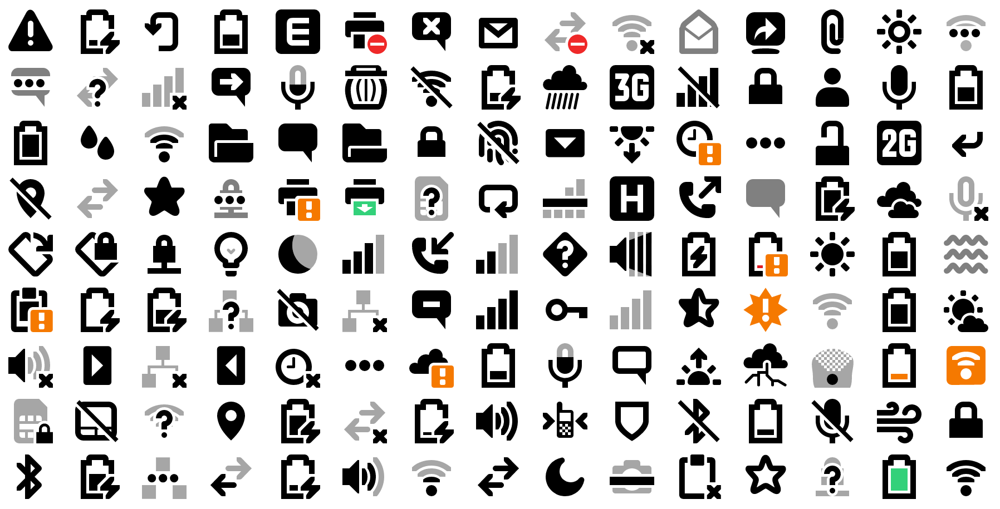

Adwaita Icons can be used by codes below. Even though it's not recommended, this is how SVG Icons work on browser without other libraries or dependencies.
<svg style="width: 1em; height: 1em;">
<use xlink:href="/path/to/adwaita-icon-web/dist/adwaita.svg#call-outgoing"></use>
</svg>
You can read furthur information about SVG Symbol at css-trick.com
Adwaita Icon Web provides javascript libraries to make it easier to use. With some setup codes, we can use icons by codes below.
<el-icon theme="adwaita" name="call-outgoing"></el-icon>
$ npm install adwaita-icon-web
<!-- In HTML <head> section -->
<!-- Load adwaita.svg -->
<link icon
rel="preload"
theme="adwaita"
href="/path/to/adwaita-icon-web/dist/adwaita.svg"
as="image" type="image/svg+xml">
<!-- Import icon.js -->
<script type="module">
import {Icon} from '/path/to/adwaita-icon-web/dist/icon.js';
customElements.define('el-icon', Icon); // define custom element for icons
</script>
In the codes above, there're 3 steps to set up icons.
theme attribute in <link icon>
which is set to adwaita.href attribute in <link icon>.Icon can be rendered by using <el-icon> (or whatever it has been defined to)
provide with specific theme and icon's name which are listed in
Icon List section.
<el-icon theme="adwaita" name="printer-error"></el-icon>
<el-icon theme="adwaita" name="dialog-warning"></el-icon>
<el-icon theme="adwaita" name="appointment-soon"></el-icon>
<el-icon theme="adwaita" name="battery-level-20"></el-icon>
<el-icon theme="adwaita" name="call-outgoing"></el-icon>
CSS color property can be used to set icon's color.
<el-icon theme="adwaita" name="call-outgoing" style="color: #2196F3;"></el-icon>
CSS font-size property can be used to scale icons.
<el-icon theme="adwaita" name="printer-error" style="font-size: 1rem;"></el-icon>
<el-icon theme="adwaita" name="dialog-warning" style="font-size: 1.5rem;"></el-icon>
<el-icon theme="adwaita" name="appointment-soon" style="font-size: 2.0rem;"></el-icon>
<el-icon theme="adwaita" name="battery-level-20" style="font-size: 2.5rem;"></el-icon>
<el-icon theme="adwaita" name="call-outgoing" style="font-size: 3rem;"></el-icon>
Using resources from NPM CDN doesn't require installation via npm. However, since many CDN use https://, please note that webpage have to serve on https:// otherwise browsers will reject to load CDN resources. (You can check error on browser debug console)
<!-- In HTML <head> section -->
<!-- Load adwaita.svg -->
<link rel="preload"
icon theme="adwaita"
href="//unpkg.com/adwaita-icon-web@1.0.0/dist/adwaita.svg"
as="image" type="image/svg+xml">
<!-- Import icon.js -->
<script type="module">
import {Icon} from '//unpkg.com/adwaita-icon-web@1.0.0/dist/icon.js';
customElements.define('el-icon', Icon); // define custom element for icons
</script>
Since most web browser will block external file access,
adwaita.svg should be served on http:// or https://
For unsupport web browser, svg4everybody is recommended.